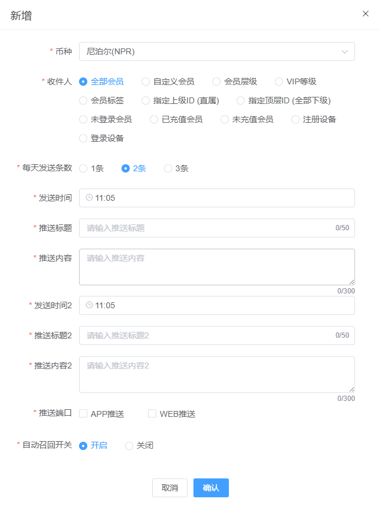
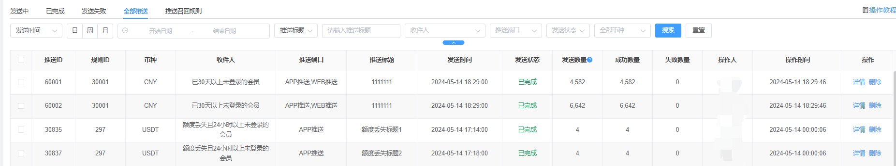
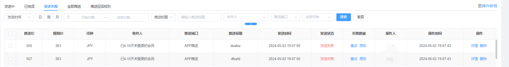

推送召回
推送召回规则
使用的前置条件，必须开启了极光推送，不然无法使用，需要注意极光推送会根据套餐限制DAU，建议选择不限制DAU的套餐，不然会出现符合召回的情况，但是会员收不到推送的情况，因为套餐限制了DAU，请根据运营情况合理选择套餐，推荐套餐3
当前召回，单次召回最大为100W，超出100W不会进行召回，后续会完善该功能
新增：
币种：选择一个币种，单选
收件人：

每天发送条数：三选1，分别为：1条，2条，3条
发送时间：站点时间24小时内自定义选择
推送标题：自定义
推送内容：自定义
推送端口：选择APP推送或者WEB推送
自动召回开关：开启后会根据配置自动进行极光推送

发送中
根据发送时间自动发送，没到发送时间状态会一直持续显示发送中，到了发送时间会进行自动发送

根据推送召回规则设置的发送时间会自动发送，成功状态会变为已完成，失败会变成发送失败
发送失败可以查看原因，根据原因，检查配置，重新操作推送即可
